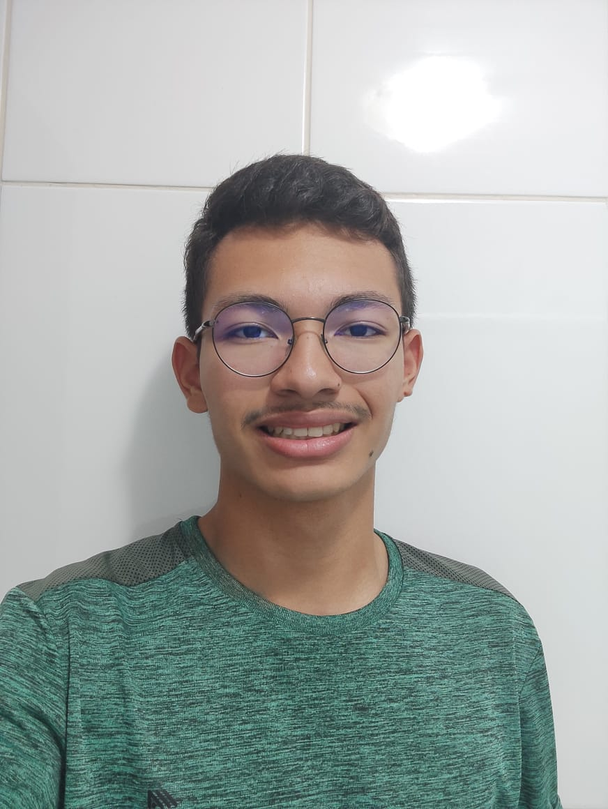

Estudantes
Trabalhos
Trabalho1
Trabalho2
Trabalho3
Prazer, meu nome é Lucas Gabriel Normando Trindade Taura, curso o 2 ano do Novo Ensino Médio, no Colégio Estadual do Paraná, e atualmente, tenho 15 anos.
Acredito que os ensinamentos propostos pela escola, de certo não são meus interesses, a verdade é que passamos 12 anos frequentando diariamente a escola, e saímos da mesma despreparados para a vida. Questões como primeiros socorros, finanças, culinária e investimentos são completamente obscuros diante as instituições.
De fato, não utilizamos nem 15% do aprendizado a longo prazo, 12 anos, que nos "obrigam" a decorar.
Tudo isso, infelizmente, pelo sistema econômico mundial que vem liderando o mercado a décadas, o Capitalismo.
" I don´t want a nation of thinkers. I want a nation of workers" - John D. Rockefeller, 400.000.000.000US$
("Eu não quero uma nação de pensadores. Eu quero uma nação de trabalhadores")
xxxxxxxx)
site de vendas de anões bebados
R$10000000,00 anão africano
R$1001,00 anão holandes
R$10200,00 anão asiáticos
R$100,00 anão paraguaios
R$1060,00 anão australianos
venda apenas por encomenda

Prazer, meu nome é Cauã Koinczeski, curso o 2 ano do Novo Ensino Médio, no Colégio Estadual do Paraná, e atualmente, tenho 15 anos.
Meus hobbes favoritos são treinar pesado com 50 kilos em cada braço, jogar minecraft até 6 da manhã, para dormir só 30 minutos, e levantar para ir no local, onde eu, olho mulheres, a escola.
Eu trabalho, num local inapropriado para menores, como eu, mas tenho a consciencia de que devo dar uma futuro para minha familia.